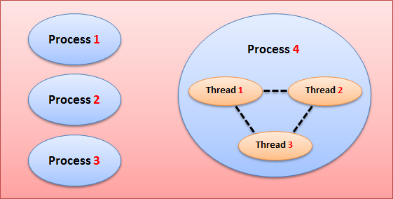
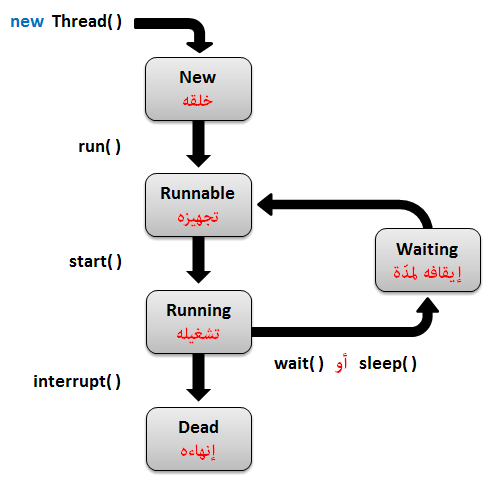

Javaتعدد المهام في جافا
مقدمة
عندما تستخدم هاتفك أو حاسوبك, ترى أنه يمكنك تشغيل عدة برامج مع بعض في وقت واحد, كل برنامج شغال في الذاكرة يعتبر Process, فمثلاً إذا قمت بتشغيل خمسة برامج مع بعض فهذا يعني أن نظام التشغيل ينظم عمل خمسة Processes مع بعض. آلية تشغيل عدة برامج مع بعض تسمى Multiprocessing.
من جهة اخرى, في البرنامج الواحد يمكنك تنفيذ عدة أوامر مع بعض و جعل المستخدم يشعر كأنها تتنفذ في وقت واحد, فمثلاً في حال كنت تلعب لعبة مثل لعبة كرة القدم, تجد أنه هناك عدة أشياء تحدث في وقت واحد, فمثلاُ عند تشغيل اللعبة تسمع عدة أصوات ( مثل أغنية حماسية, صوت المعلق, صوت المشجعين, صوت صفارة الحكم في حال وقع خطأ إلخ.. ), بالإضافة إلى أنه يمكنك تحريك اللاعب و مشاهدة توقيت المبارة و الكثير من التفاصيل الأخرى التي تحدث كلها في نفس الوقت لتصنع لك لعبة رائعة. هذه الآلية تسمى Multithreading, لأن كل جزء شغال في البرنامج يكون عبارة عن مجموعة أوامر موضوعة بداخل Thread خاص.
إذاً نستخدم آلية Multithreading لجعل البرنامج قادر على تنفيذ عدة أوامر مع بعض و كأنها تتنفذ في وقت واحد, و هذا ما سنتعلمه في هذا الدرس.
معلومة تقنية
فعلياً, في البرنامج الواحد لا يمكن تنفيذ عدة أوامر في نفس الوقت, لكن يمكن جعل نظام التشغيل يعيد تنفيذ أوامر محددة عدة مرات خلال أجزاء من الثانية, مما يجعل المستخدم يظن أن جميع الأشياء الموجودة في البرنامج تعمل في وقت واحد لأنه غير قادر على ملاحظة ما الذي يعمل و ما الذي لا يعمل خلال أجزاء من الثانية, فتبدو له و كأنها كلها تعمل مع بعضها دفعة واحدة.
الفرق بين الـ Process و الـ Thread
Process تعني برنامج شغال حالياً, و قد قام نظام التشغيل بحجز مساحة خاصة له في الذاكرة.
Thread عبارة عن مجموعة أوامر يتم تنفيذها أثناء تنفيذ أوامر أخرى في نفس البرنامج. يمكنك تشغيل أكثر من Thread في نفس الوقت في البرنامج, و يمكن أيضاً مشاركة المعلومات بينهم. مع ملاحظة أنه يتم إنشاء جميع الـ Threads من ضمن المساحة المحجوزة للـ Process في الذاكرة.

فوائد الـ Multithreading
جعل المستخدم قادر على تنفيذ عدة عمليات مع بعض في نفس الوقت.
جعل تصميم التطبيقات أجمل و إضافة مؤثرات فيه.
كل Thread تقوم بتشغيله, يعمل بشكل منعزل عن باقي الأوامر الموجودة في البرنامج, و بالتالي فإنه في حال وقوع أي خطأ في الـ Thread فإنه لن يؤثر على باقي الأوامر الموجود في البرنامج, كما أنه لا يؤثر على أي Thread آخر شغال في البرنامج.
دورة حياة الـ Thread ( Thread Life Cycle )
الـ Thread لا يعمل مباشرةً عند إنشاءه, بل يمر بعدة مراحل تباعاً حتى يعمل و ينفذ الأوامر الموضوعة بداخله, و هو ينتقل من مرحلة إلى أخرى من خلال دوال معينة كما في الصورة التالية.

المرحلة New: هي المرحلة التي يتم فيها إنشاء كائن الـ Thread.
المرحلة Runnable: تبدأ هذه المرحلة بعد إستدعاء الدالة run(), و هي تعني أن كائن الـ Thread جاهزاً لينفذ الأوامر الموضوعة فيه.
المرحلة Running: تبدأ هذه المرحلة بعد إستدعاء الدالة start(), و هي تعني أن كائن الـ Thread يبدأ بتنفيذ الأوامر الموضوعة فيه.
المرحلة Waiting: تبدأ هذه المرحلة بعد إستدعاء الدالة wait() أو sleep(), و هي تعني أن كائن الـ Thread متوقف لمدة معينة.
المرحلة Dead: يقال لها Terminated أيضاً, و هي تعني إيقاف كائن الـ Thread كلياُ عن العمل و مسحه من الذاكرة, تبدأ هذه المرحلة بعد إستدعاء الدالة interrupt().
ملاحظة
الهدف هنا فقط توضيح آلية عمل الـ Thread حتى لا تجد صعوبة في فهمها.
ركز قليلا على الدوال التي تنقل الـ Thread من مرحلة لأخرى, لكن لا تحفظ أسماء المراحل.
مفهوم الـ Main Thread
عندما تقوم بتشغيل أي برنامج في جافا, فإن جافا تعامله كـ Thread, لأن كل برنامج تقوم بإنشائه يمر بالمراحل التي ذكرناها.
فمثلاً, تخيل أنك قمت ببناء برنامج بسيط يطلب من المستخدم إدخال عددين, بعدها يقوم البرنامج بطباعة ناتج هذين العددين للمستخدم, هنا سيحدث التالي عند تشغيله:
سيتم فحص كود البرنامج للتأكد من عدم وجود أي خطأ.
بعدها سيتم البحث عن الدالة main() التي تعتبر نقطة البداية في البرنامج.
بعدها سيتم تنفيذ الأوامر الموضوعة في الدالة main() بالترتيب الموضوعين فيه. و بالتالي سيطلب البرنامج من المستخدم إدخال عددين.
بعدها سيقوم البرنامج بإنتظار المستخدم لإدخال العددين.
بعد إدخالهما سيقوم بجمع العددين و طباعة الناتج. و عندها ينتهي البرنامج و يتم مسحه من الذاكرة بشكل تلقائي.
لتتأكد أكثر, قمنا ببناء برنامج فيه خطأ متعمد. لاحظ أنه عند تشغيل البرنامج سيخبرك أنه توجد مشكلة في الـ thread الذي إسمه main.
مثال
Main.java
public class Main {
public static void main(String[] args) {
// و وضعنا فيه نص بدل أن نضع فيه رقم int كـ x هنا يوجد خطأ في الكود و هو أننا قمنا بتعريف المتغير
int x = "i am a string!";
}
}
• سنحصل على نتيجة تشبه النتيجة التالية عند التشغيل.
Exception in thread "main" java.lang.RuntimeException: Uncompilable source code - incompatible types
required: int
found: java.lang.String
• لاحظ أنه أخبرك أن المشكلة حدثت في الـ thread "main".
الكلاسات المصممة للتعامل مع الـ Thread
الجدول التالي يحتوي على كلاسات مصممة خصيصاً لإنشاء Thread و التحكم بطريقة عمله.
ملاحظة: جميع هذه الكلاسات مرتبطة مع بعضها و موضوعة بترتيب منظم, لذلك عليك قراءتهم واحداً تلو الآخر لتفهمهم جيداً.
| الكلاس مع تعريفه |
public class Thread
يمكنك إنشاء الـ Thread من خلال وراثة الكلاس Thread.
تابع القراءة » |
public interface Runnable
المشكلة الوحيدة التي تواجهها عند إنشاء الـ Thread من خلال وراثة الكلاس Thread هي أن الكلاس يصبح غير قادر على أن يرث من كلاس آخر, لأن جافا لا تدعم تعدد الوراثة, و بالتالي لا يستطيع الكلاس أن يفعل extends لأكثر من كلاس.
لحل مشكلة تعدد الوراثة, يمكنك جعل الكلاس يفعل implements للإنترفيس Runnable و تنشئ كائن من الكلاس Thread بداخله.
تابع القراءة » |
public class ThreadGroup
يمكنك أيضاً استخدام الكلاس ThreadGroup لإنشاء أكثر من Thread و وضعهم في مجموعة واحدة, مما يجعلك قادراً على التعامل معهم جميعاً دفعة واحدة.
تابع القراءة » |
public class Executors + public interface ExecutorService
ملاحظة: هناك العديد من الكلاسات و الإنترفيسات الأخرى التي تستخدم لإنشاء Threads و التعامل معهم بطرق مختلفة.
هنا وضعنا مثال طبقنا فيه مبدأ يسمى Thread Pool, حيث أننا إستخدمنا فيه الكلاس Executors و الإنترفيس ExecutorService لإنشاء خمسة Thread من نفس الـ Thread و تشغيلهم دفعة واحدة, بدل إنشاء كل Thread على حدة و تشغيله.
شاهد المثال » |

 محرر الويب
محرر الويب نظام الألوان
نظام الألوان محول الوحدات
محول الوحدات محلل عناوين الشبكات
محلل عناوين الشبكات